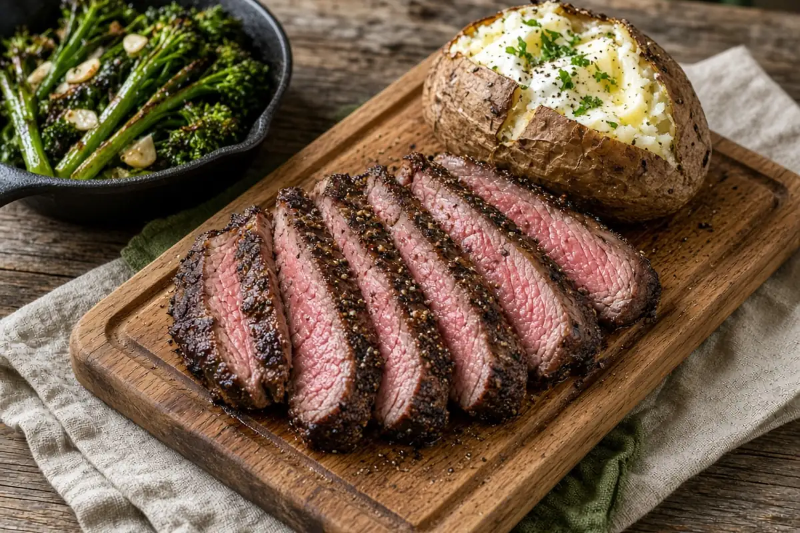

Pellet-Grill Reverse-Sear Tri-Tip
Tri-tip smoked low at 225°F and seared hard in cast iron, with loaded baked potatoes and garlicky charred broccolini.

4 servings
By
Yield: 4 servings
Prep:
Cook:
Total:
Difficulty: Easy
Ingredients
- 1 tri-tip roast, about 2 1/2 lb
- 2 tsp kosher salt
- 1 tsp black pepper
- 1 tsp garlic powder
- 1 tsp smoked paprika
- 1 Tbsp avocado oil, for the tri-tip
- 4 medium russet potatoes, scrubbed
- 1 Tbsp avocado oil, for the potatoes
- 2 Tbsp unsalted butter
- 1/2 cup sour cream
- 1/2 cup shredded cheddar
- 2 Tbsp chopped chives
- 1 lb broccolini, trimmed
- 1 Tbsp avocado oil, for the broccolini
- 1/2 tsp kosher salt, for the broccolini
- 1/4 tsp black pepper, for the broccolini
- 2 cloves garlic, minced
Instructions
- Heat the pellet grill to 225°F. Pat the tri-tip dry, rub it with the avocado oil for the tri-tip, and season with the kosher salt, black pepper, garlic powder, and smoked paprika.
- Rub the potatoes with the avocado oil for the potatoes and a pinch of salt, and set them on the grill away from the hottest spot.
- Lay the tri-tip fat side up on the grill next to the potatoes. Smoke 60 minutes, until the center reads 120°F and a fork slides easily into the potatoes.
- Toss the broccolini with the avocado oil for the broccolini, the salt and pepper for the broccolini, and the garlic. Char it in a very hot cast-iron skillet, turning once, about 5 minutes. Move it to a plate.
- Sear the tri-tip in the same ripping-hot skillet 2 minutes per side, until the center hits 130°F for medium-rare. Rest it 10 minutes.
- Split the potatoes, fluff the centers, and top with the butter, a pinch of salt, the cheddar, sour cream, and chives. Slice the tri-tip against the grain (the grain changes direction where the two muscles meet) and serve with the broccolini.
Notes: Thickness matters: a thin tri-tip may hit 120°F in 45 minutes and a thick one can take 75, so go by the thermometer. If the potatoes need more time, finish them in a 425°F oven.